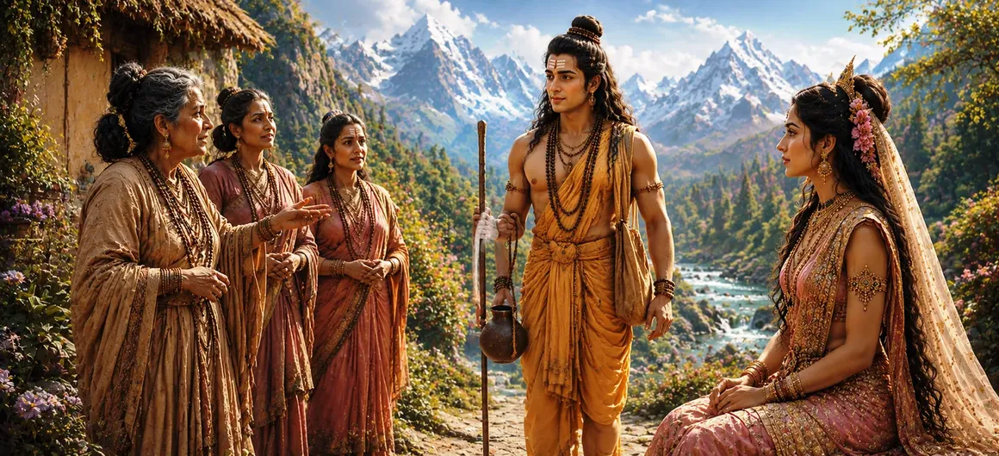

Having observed Pārvatī's unwavering devotion through many trials, Lord Shiva decided to personally examine the depth of her faith. Assuming the form of a youthful Brahmacārin, he approached her hermitage in the Himalayas. Disguised as a wandering seeker of knowledge, Shiva concealed his divine identity and prepared to test whether Pārvatī's devotion remained firm even when challenged directly.
One day, while Pārvatī was engaged in meditation and sacred practices, a radiant young Brahmacārin arrived at her hermitage. His appearance reflected learning, discipline, and spiritual wisdom. Though unknown to her, he carried an aura that inspired respect and curiosity.
Following the sacred traditions of hospitality, Pārvatī greeted the Brahmacārin with humility. She offered him a seat and inquired about his journey. Her respect toward the unknown visitor reflected her noble character and adherence to dharma.
The Brahmacārin gently asked why she was performing such severe austerities. Pārvatī openly revealed her desire to obtain Lord Shiva as her husband. Hearing this, the visitor appeared thoughtful and prepared to continue the conversation.
Though appearing friendly and respectful, the Brahmacārin began subtly questioning Pārvatī's choice. He wondered why such a noble princess sought an ascetic who possessed neither wealth nor royal status. These questions were carefully designed to examine the firmness of her devotion.
Pārvatī did not become disturbed by the questions. Instead, she answered with patience and confidence. She explained that her devotion was based upon spiritual truth rather than worldly attractions and that Lord Shiva was the Supreme Reality beyond all external appearances.
While the conversation continued, Shiva carefully observed Pārvatī's words and intentions. Every response confirmed the sincerity of her devotion. Her faith remained unshaken despite the challenges presented before her.
This meeting marked a crucial turning point in Pārvatī's spiritual journey. The Lord himself had come to examine the devotion that had inspired years of tapasya. The outcome of this encounter would soon lead the story toward its long-awaited fulfillment.
True devotion remains steady when questioned.
Knowledge strengthens sincere devotion.
The Divine sometimes tests devotees to reveal their greatness.
Shiva's disguise was not intended to deceive but to reveal. By appearing as an ordinary seeker, he created an opportunity for Pārvatī to express the depth of her spiritual conviction openly and without hesitation.
Life often presents challenges that test the sincerity of our beliefs. Like Pārvatī, those who remain faithful to truth and spiritual ideals discover that every test ultimately strengthens their devotion.
The celestial beings watched these events with great interest. They knew that the Brahmacārin was none other than Shiva himself and eagerly awaited the outcome of this extraordinary test that would shape the future of the universe.
With every answer given by Pārvatī, the moment of revelation drew closer. Her devotion had already overcome countless trials, and soon the hidden identity of the mysterious Brahmacārin would become known.
"Faith that knows the truth remains unshaken by every disguise and every test."
Lord Shiva has now appeared before Pārvatī in the disguise of a young Brahmacārin. Concealing his true identity, he begins a subtle examination of her devotion and spiritual understanding. As the conversation deepens, the mysterious ascetic takes an unexpected approach by speaking critically of Shiva himself. Continue to the next chapter to witness how the Brahmacārin ridicules Shiva and how Pārvatī responds with unwavering faith, wisdom, and devotion.